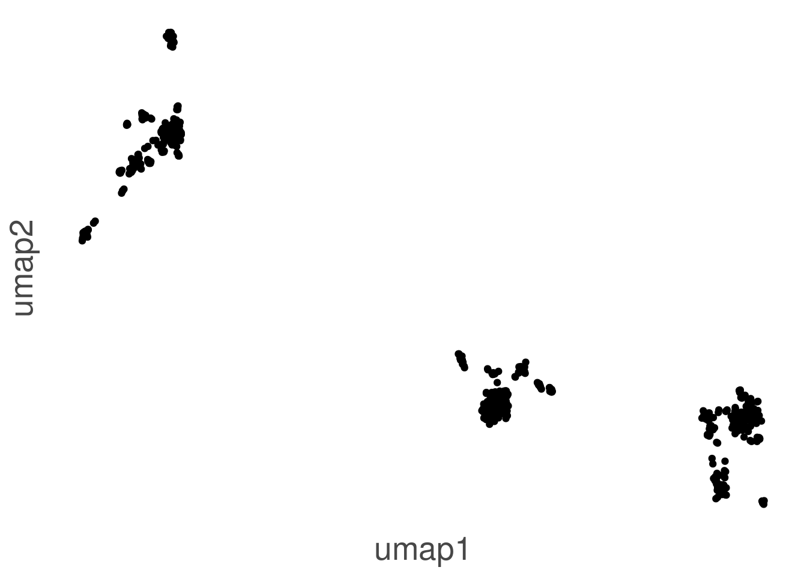

5 Analysis and Visualization module
The analysis and visualization module from CopyKit work in synergy to help you analyze and assess the results from your day.
The analysis module provides the following functions: runUmap(), calcInteger(), findSuggestedK(), findClusters(), calcConsensus() and runPhylo().
The visualization module functions are: plotMetrics(), plotRatio(), plotUmap(), plotHeatmap(), plotConsensusLine() and plotGeneCopy().
5.1 plotRatio()
It is often important to visualize that the segmentation behaved as expected and closely follows the ratios. Not missing important events. Ratio plots are a great tool for this. You can plot ratio plots with the plotRatio() function. plotRatio() has two different modes. When the input is the CopyKit object an interactive app will run and you can select which cell will be visualized.

If plotRatio() is given a sample name only the plot for that cell will be shown.

5.2 runUmap()
runUmap uses generates a UMAP reduced dimensions embedding, the resulting embedding is stored within the scCNA reducedDim slot and is an important pre-processing step to the findClusters feature.
## Embedding data with UMAP. Using seed 17## Access reduced dimensions slot with: SingleCellExperiment::reducedDim(scCNA, 'umap').## Done.Additional arguments to control umap parameters can be passed on torunUmap() with the ‘…’ argument.
## Embedding data with UMAP. Using seed 17## Access reduced dimensions slot with: SingleCellExperiment::reducedDim(scCNA, 'umap').## Done.5.3 plotUmap()
plotUmap() can be used to plot the reduced dimensional embedding. plotUmap can be colored by any element of the metadata with the argument ‘label’, this will be shown in a later section.
## Plotting Umap.## No cluster information detected, use findClusters() to create it.
5.4 Clustering
The findClusters() function will use the reduced dimensional embedding resulting from runUmap to perform clustering of superclones and subclones.
When clustering for superclones findClusters() creates a graph representation of the dataset reduced dimension embedding using a shared nearest neighbor algorithm (SNN), from this graph the connected components are extracted and generally represent high-level structures that share large, lineage defining copy number events.
CopyKit can also be used to detect subclones, i. e. groups of cells containing a unique copy number event per cluster, to do so the umap embedding is again used as the pre-processing step, this time to perform a density-based clustering with hdbscan as seen in the work from Laks et al. (???).
5.4.1 findSugestedK()
Density-based clustering requires the input of the k neighbors, frequently chosen ad hoc. To help with parametrization, CopyKit provides the helper findSuggestedK function. findSuggestedK performs a clustering bootstrapping over a range of k values and returns the value that maximizes the jaccard similarity. While findSuggestedK does not guarantee that the suggested value will result in optimal clustering but provides a guide that maximizes cluster stability.
## Calculating jaccard similarity for k range: 7 8 9 10 11 12 13 14 15 16 17 18 19 20 21 22 23 24 25## ## Suggested k = 9 with mean jaccard similarity of: 0.742The suggested value is stored into the metadata and can be accessed at:
## [1] 95.4.2 findClusters()
To run findClusters() simply use the function in the CopyKit object and provide the k value with the arguments ‘k_superclones’ and ‘k_subclones’.
NOTE: k_superclones and k_subclones can be used concurrently. Only k_subclones is a mandatory field.
## Finding clusters, using method: hdbscan## Done.If findSuggestedK() was used and the argument ‘k_subclones’ is not provided, findClusters() will automatically use the value resulting from findSuggestedK() that was stored into the metadata:
## Using suggested k_subclones = 9## Finding clusters, using method: hdbscan## Done.The results from the clustering can be visualized with different plotting functions. For example plotUmap() can be used with the argument ‘label’:
## Coloring by: subclones## Plotting Umap.
5.5 plotHeatmap()
A heatmap can be used to visualize the copy number profiles of the dataset annotated with the subclonal information:

Importantly, new information can be added to the metadata and used in conjunction with the plotting functions. The dataset in this example has some spatial information obtained from the macrodissection of the tissue. It is encoded in the sample name by the letter S followed by a number. We can extract that information and add it as an extra column to the metadata:
Once the information has been added, we can use it to color the heatmap points by their spatial information:
## Coloring by: spatial_info## Plotting Umap.
It is also possible to annotate the heatmap with that information:
The ‘label’ argument for plotHeatmap() can add as many annotations as specified by the user as long as they are elements in colData() of the CopyKit object.

5.6 calcConsensus()
Consensus sequences can help visualize the different segments across the groups of cells. A consensus sequence can be calculated in CopyKit with the function calcConsensus()
plotHeatmap() can also plot consensus heatmap of the CopyKit object:
## Warning: The input is a data frame, convert it to the matrix.
By default calcConsensus() uses the subclones information to calculate a consensus for each subclone. Importantly, any element of the colData() can be used to calculate the consensus.
## Warning: The input is a data frame, convert it to the matrix.5.7 plotConsensusLine()
To make it easier to compare the differences among subclones, plotConsensusLine() opens an app where the consensus sequences are plotted as lines and a checkbox can be used to add overlays of the sequences. Making it easier to determine the differences between regions.

5.8 calcInteger()
Segment mean ratios can be scaled to integer values, this process of ploidy scaling is accomplished within CopyKit with calcInteger(). CopyKit supports using a fixed value of ploidy that will scale all the cells (generally determined using Flow Cytometry). Alternatively, if different ploidies are needed for different cells, a vector containing the ploidies can be passed on to calcInteger() as long as it contains the same length and sample order as colData()
## Scaling ratio values by ploidy value 3.45The integer segment mean ratios are stored in the slot integer that can be accessed with the function assay()
If a value of ploidy exists, plotRatio() will use it to plot the integer copy number values as a secondary axis.

5.9 plotGeneCopy()
It might be of interest to check for the copy number states across all the samples for different genes. That can be done with plotGeneCopy() in two different geoms: “swarm” (default) or “violin”. As with other plot functions, points can be colored with the argument ‘label’.
plotGeneCopy(tumor, genes = c("CDKN2A",
"FGFR1",
"TP53",
"PTEN",
"MYC",
"CDKN1A",
"MDM2",
"AURKA",
"PIK3CA",
"CCND1",
"KRAS"),
label = 'spatial_info')## Coloring by: spatial_info
It is also possible to visualize the integer data as a frequency barplot for each gene:
plotGeneCopy(tumor, genes = c("CDKN2A",
"FGFR1",
"TP53",
"PTEN",
"MYC",
"CDKN1A",
"MDM2",
"AURKA",
"PIK3CA",
"CCND1",
"KRAS"),
geom = 'barplot',
assay = 'integer')
Baslan, T., J. Kendall, L. Rodgers, H. Cox, M. Riggs, A. Stepansky, J. Troge, et al. 2012. “Genome-Wide Copy Number Analysis of Single Cells.” Journal Article. Nat Protoc 7 (6): 1024–41. https://doi.org/10.1038/nprot.2012.039.
Gao, R., A. Davis, T. O. McDonald, E. Sei, X. Shi, Y. Wang, P. C. Tsai, et al. 2016. “Punctuated Copy Number Evolution and Clonal Stasis in Triple-Negative Breast Cancer.” Journal Article. Nat Genet 48 (10): 1119–30. https://doi.org/10.1038/ng.3641.